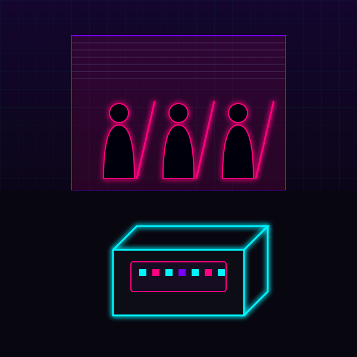

STŘEP KYUUBI · 12:05:33
Balík doneseš do skladu ve Watsonu. Uvnitř je zbrusu nový cyberdeck, přesně takový, jaký netrunnerka potřebuje.
Překupník dodrží slovo a edáče ti cinknou na účet. Jenže ve vratech už stojí gang s katanami. Někdo tě práskl.
